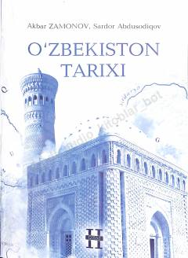

OTO'zbekiston tarixining IX-XIV asrlar davrini qamrab olgan oliy o'quv yurtlari uchun darslik.
Ushbu darslik O'zbekiston tarixining IX-XIV asr o'rtalarigacha bo'lgan davrini qamrab oladi. Unda Turon hududidagi davlatchilik tizimi, siyosiy, ijtimoiy-iqtisodiy jarayonlar hamda Sharq Uyg'onishi davri allomalarining ilmiy merosi yoritilgan.